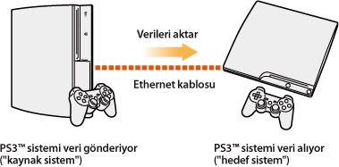
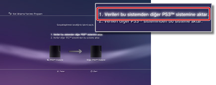
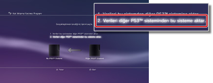

Ayarlar > Sistem Ayarları > Veri Aktarımı Yardımcı Programı
Veri Aktarımı Yardımcı Programı
Artık, bir PS3™ sisteminin sistem depolama alanında kayıtlı verileri başka bir PS3™ sistemine bir Ethernet kablosu kullanarak aktarabilirsiniz (kopyalayabilirsiniz veya taşıyabilirsiniz).

Uyarılar
- Bu işlemi gerçekleştirdiğinizde, verileri alacak ("hedef sistem") PS3™ sisteminde depolanan tüm veriler silinecektir.
- Silinen veriler geri yüklenemez, bu yüzden kazayla önemli verileri silmemeye dikkat edin. Veri kaybı veya bozulmadan kullanıcı sorumludur.
- Bazı veri türleri aktarılamayabilir. Ayrıntılar için burayı seçin.
Verileri aktarmak için sistemleri hazırlama
Veri aktarımı işlemini başlatmadan önce, aşağıdaki adımları gerçekleştirmeniz gerekir.
1. |
Her iki PS3™ sisteminin yazılımını da en son sürüme güncelleyin. |
|---|---|
2. |
Verileri gönderecek PS3™ sistemini hazırlayın ("kaynak sistem"). |
- Kullanıcının hesabı yoksa bir Sony Entertainment Network hesabı oluşturun.
- - Bir hesap oluşturmak için
 (PlayStation™Network) >
(PlayStation™Network) >  (Kaydol) öğesini seçin ve sonra ekran yönergelerini izleyin.
(Kaydol) öğesini seçin ve sonra ekran yönergelerini izleyin. - Aktarılacak veriler PlayStation®Store üzerinden satın alınan içeriğe sahipse PS3™ sistemini devre dışı bırakın.
- - (PlayStation™Network) >
 (Hesap Yönetimi) >
(Hesap Yönetimi) >  (Sistem Etkinleştirme) öğesini seçin.
(Sistem Etkinleştirme) öğesini seçin. - PS3™ sistemindeki kupa bilgilerini yedekleyin veya kupa bilgilerini aktarmak istiyorsanız PSNSM sunucusuyla "eşitleyin".
- - PSNSM oturumu açın ve sonra (PlayStation™Network) >
 (Kupa Koleksiyonu) öğesini seçin.
(Kupa Koleksiyonu) öğesini seçin. - LittleBigPlanet™ içinde oluşturduğunuz profil bilgilerinizi ve aşamaları kaydettiğiniz oyuna yedekleyin. Daha sonra hedef PS3™ sisteminde LittleBigPlanet™ oynarken yedeklenen verileri kullanabilirsiniz.
Uyarı
Bir hesap oluşturmadan veri aktarımı işlemi gerçekleştirirseniz aşağıdaki kısıtlamalar geçerlidir:
- Hedef PS3™ sisteminde kayıtlı verileri kullanamayabilirsiniz.
- Aktardığınız kazandığınız kayıtlı verileri kullanarak artık kupa kazanamayabilirsiniz.
- Kupa bilgileri aktarılmaz.
Verileri aktarma
Her iki PS3™ sistemini de kapatın ve sonra aşağıdaki adımları gerçekleştirin. Aktarılan veriler kaydedilen kopyalanması yasak oyun verileriyse veya telif hakkı korumalı verilerse, hedef PS3™ sistemine kopyalanır ve kaynak PS3™ sisteminden silinir.
1. |
Bir Ethernet kablosu kullanarak iki PS3™ sistemi arasında doğrudan bağlantı kurun. |
|---|---|
2. |
PS3™ sistemlerini TV'deki farklı video giriş konektörlerine bağlayın. |
3. |
TV'yi açın ve sonra PS3™ sistemini açın. |
4. |
Kaynak PS3™ sisteminde, |
5. |
[1. Verileri bu sistemden diğer PS3™ sistemine aktar.] öğesini seçin.  Daha önce açıklanan hazırlama adımlarını tamamlamadıysanız, bu adımları tamamlamak için ekran yönergelerini izleyin. |
6. |
PS3™ sistemi beklemedeyken veri aktarımını başlatmak için, hedef PS3™ sisteminin ekranını görüntülemek için video girişini değiştirmek için TV'nin uzaktan kumandasını kullanın. |
7. |
Hedef PS3™ sisteminde, |
8. |
[2. Verileri diğer PS3™ sisteminden bu sisteme aktar.] öğesini seçin  İşlemi tamamlamak için ekrandaki yönergeleri izleyin. |
 (Ayarlar) >
(Ayarlar) >  (Sistem Ayarları) > [Veri Aktarma Yardımcı Programı] öğesini seçin.
(Sistem Ayarları) > [Veri Aktarma Yardımcı Programı] öğesini seçin.İpuçları
- Veri aktarımı işlemi tamamlandıktan sonra, kaynak PS3™ sistemini kapatabilirsiniz. TV'yi kaynak PS3™ sisteminin ekranını görüntülemek için ayarlayın ve sonra
 (Kullanıcılar) >
(Kullanıcılar) >  (Sistemi Kapat) öğesini seçin.
(Sistemi Kapat) öğesini seçin. - PlayStation®Store üzerinden indirilen içerik bu işlemin bir parçası olarak aktarıldıysa, verileri kullanabilmek için önce hedef PS3™ sistemini etkinleştirmeniz gerekir. PS3™ sisteminde içerik sahibi kullanıcı olarak oturum açın ve sonra sistemi etkinleştirmek için (PlayStation™Network) > (Hesap Yönetimi) > (Sistem Etkinleştirme) öğesini seçin.
Veri aktarımı yardımcı programının sınırlamaları
Bazı veri türleri veri aktarımı yardımcı programı kullanılarak aktarılamaz ve bazı veri türleri aktarılabilir, ancak hedef PS3™ sisteminde oynatılamaz.
En son bilgiler için, bölgenizdeki SIE web sitesini ziyaret edin. Aşağıdaki veri türleri aktarılabilir:
- PS3™ sisteminin sistem depolama alanında kayıtlı SingStar™ yazılımı için parçalar ("şarkı paketleri" dahil)
- Telif hakkı korumalı video dosyaları (dosya türleri: MGV ve ETS)
- DivX® VOD (İstek Üzerine Video) hizmetiyle uyumlu video dosyaları
- PS3™ sisteminin sistem depolama alanında yüklüyse aşağıdaki PlayStation®2 formatındaki yazılım başlıkları:
- - [Nobunaga's Ambition Online] ve [Genişletme Paketleri]
- - [FINAL FANTASY XI] ve [Genişletme Diskleri]
- - [SOCOM II: U.S. NAVY SEALs] ve [OPM* Issue 87, OPM* Issue 88, OPM* Issue 89, OPM* Issue 90 dahil ilgili diskler]
- - SOCOM 3: U.S. NAVY SEALs
- - SOCOM: U.S. NAVY SEALs Combined Assault
Verileri kullanabilmek için veri aktarımını tamamladıktan sonra aşağıdaki veri türleri için, bazı ek adımları gerçekleştirmeniz gerekir:
- GripShift™
- - Aktarım işleminden sonra oyunu ilk kez başlattığınızda, bir hata mesajı görüntülenir ve oyun oynayamayabilirsiniz. Oyunu oynamak için, oyunu indirin ve tekrardan yükleyin.
- Ghostbusters™ ve Ghostbusters™: Video Game için kayıtlı veriler
- - Kaydedilen oyun, veri aktarımı işleminden sonra oyunu ilk kez başlattığınızda tanınmaz. Kayıtlı verileri kullanmak için, oyundan çıkın ve sonra oyunu tekrar başlatın.
| * |
Resmi PlayStation Dergisi |
|---|
İpucu
Bazı yazılım başlıkları bazı bölgelerde satılmayabilir.